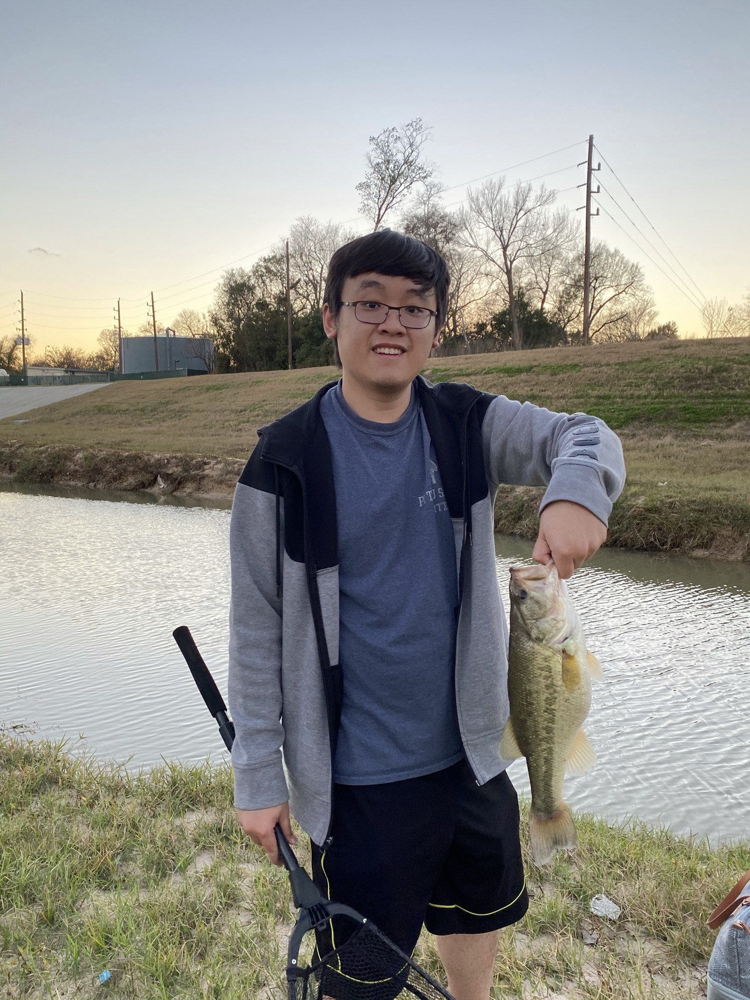

From a young age, I’ve always had a sense of motivation and passion driving me forward. Whether it’s exploring unique opportunities, learning additional skills, or meeting new people, I bring these values to every experience throughout my life on a personal and professional level. To learn more about me, keep exploring my site or reach out directly. I Invite you to add me on LinkedIn.

I am a Master of Mechanical Engineering graduate with entrepreneurial experience and extensive programming background. An adaptable, fast learner with excellent communication and project management ability. Skilled in 3D modeling, MATLAB, Python, and GUI creation.
CO-FOUNDER/CHIEF STRATEGY OFFICER, DECISIONPX
DecisionPx is a startup company that assists seed companies and agricultural research entities in the development of automated trait analysis using artificial intelligence. Being a Co-Founder, I played many roles in the company including bookkeeper, programmer and tech wiz. I was responsible for the following:
§ Developed a MATLAB program that automatically counts weevil larvae and extracts physical traits, reducing labor requirements by 90% and reducing client’s project timeline by 88%.
§ Set up Amazon AWS and Docker environment to run OpenDroneMap from Github.
§ Provided technical customer support by diagnosing and fixing bugs quickly.
§ Employed Sandler’s sales technique to identify customers’ pain and to close deals.
§ Developed relationship with startup community, which includes mentors, investors, advisors and peers in a startup incubator (ISU Startup Factory).
§ Kept company’s financials updated in Quickbooks and manage company’s budget.
RESEARCH ASSISTANT, IOWA STATE UNIVERSITY
Wrote a MATLAB program that inputs phenotypic maize data, links to subsequent weather data, and display the result visually and clearly.
Wrote a MATLAB program that analyzes bacteria growth automatically.
Utilized computer vision and machine learning for recognition and classification of corn hybrids.
Scripted and deployed C#, Python and bash scripts on supercomputer (Cyence, Blue Waters and Stampede) to reduce data analysis time by 90%.
Used Github to coordinate efforts between developers and testers.
Developed key relationships with peers and faculty and collaborated on multiple projects with the ISU Agronomy Department and Plant Science Institute.
Co-developed a MATLAB program that uses graph-based algorithms to automatically analyze 27 root traits.